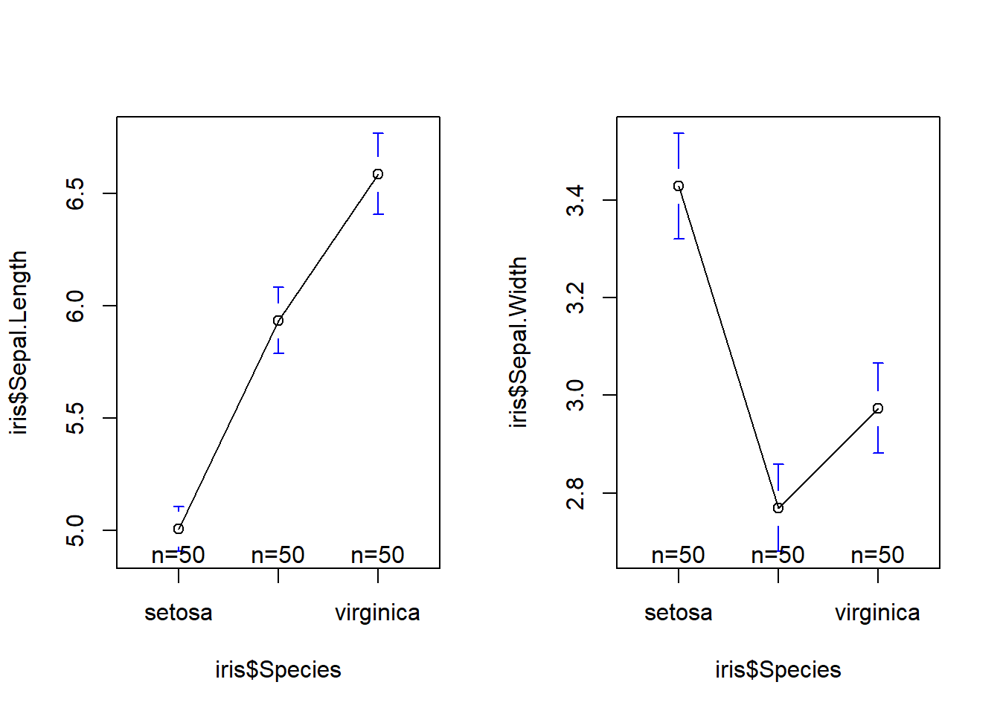

library(knitr)
df <- data.frame(
Math = c(80, 90),
English = c(85, 95),
row.names = c("Tom", "Mary")
)
kable(df, format = "markdown")| Math | English | |
|---|---|---|
| Tom | 80 | 85 |
| Mary | 90 | 95 |
R in statistics (Advanced)
👉🏻Click to enter the ENV222 exercise section
👉🏻Click to enter the ENV221 note section
Subscript by Rmarkdown: Use PM~2.5~ to form PM2.5.
Subscript by html: log<sub>2</sub> will be displayed as log2.
Superscript by Rmarkdown: Use R^2^ to form R2.
Superscript by html: 2<sup>n</sup> will be displayed as 2n.
Use $E = mc^2$ to form \(E = mc^2\)
Use [Link of XJTLU](http://xjtlu.edu.cn) to form Link of XJTLU
Use <center><img src="images/rstudio-qmd-how-it-works.png" width="1400" height="257"/> or <center> {width=100%} to form

Use something like {r, fig.width = 6, fig.height = 4, fig.align='center'} in front of the code chunk to change the output graphics
Also, use{r, XXX-Plot, fig.cap="XXX-Plot"} in the front of code chunk to add a caption of this figure
Use something like<span style="color:red; font-weight:bold; font-size:16px; font-family:Tahoma;">sentence</span> to change the properties of text
Use
| Name | Math | English |
|:----:|:-----|--------:|
| Tom | 93 | 100 |
| Mary | 60 | 90 |
to form
| Name | Math | English |
|---|---|---|
| Tom | 93 | 100 |
| Mary | 60 | 90 |
library(knitr)
df <- data.frame(
Math = c(80, 90),
English = c(85, 95),
row.names = c("Tom", "Mary")
)
kable(df, format = "markdown")| Math | English | |
|---|---|---|
| Tom | 80 | 85 |
| Mary | 90 | 95 |
- 1.
- 2.
- 1.
- 2.
- 3.to form sub-rank like this below:
# import dataset
x <- 'The world is on the verge of being flipped topsy-turvy.'
dtf <- read.csv('data/student_names.csv')
head(dtf) Name Prgrm
1 Yuzhou Liu Bio
2 Penghui Wang Bio
3 Ziang Li Eco
4 Youcheng Jin Bio
5 Yuge Yang Bio
6 Yutian Song Eco# data type
class(x)[1] "character"# length of the dataset
length(x)[1] 1# length of the sub dataset
nchar(x)[1] 55which.max or which.min is used to find the index of the (first) minimum or maximum of a numeric (or logical) vectorname_n <- nchar(dtf$Name)
name_nmax <- which.max(name_n)
dtf$Name[name_nmax][1] "Iyan Hafiz Bin Mohamed Faizel"# or
dtf$Name[which.max(nchar((dtf$Name)))][1] "Iyan Hafiz Bin Mohamed Faizel"# or
library(magrittr)
dtf$Name %>% nchar() %>% which.max() %>% dtf$Name[.][1] "Iyan Hafiz Bin Mohamed Faizel"# tolower() toupper()
(xupper <- toupper(x))[1] "THE WORLD IS ON THE VERGE OF BEING FLIPPED TOPSY-TURVY."(dtf$pro <- tolower(dtf$Prgrm)) [1] "bio" "bio" "eco" "bio" "bio" "eco" "bio" "bio" "eco" "bio" "eco" "bio"
[13] "bio" "env" "bio" "bio" "bio" "env" "bio" "env" "bio" "bio" "bio" "bio"
[25] "eco" "eco" "env" "bio" "bio" "bio" "bio" "env" "bio" "bio" "bio" "bio"
[37] "bio" "eco" "eco" "bio" "bio" "bio" "bio" "bio" "bio" "bio" "bio" "eco"
[49] "bio" "bio" "env" "eco" "eco" "bio" "env" "env" "env"# strsplit()
x_word <- strsplit(xupper, ' ')
class(x_word)[1] "list"# If you want to extract the first element in the list, you need to use double brackets [[]], and if you want to extract the first sublist in the list, use single brackets []
x_word1 <- x_word[[1]]
class(x_word1)[1] "character"table(x_word1) # Form a table which involved the frequency of each char acterx_word1
BEING FLIPPED IS OF ON THE
1 1 1 1 1 2
TOPSY-TURVY. VERGE WORLD
1 1 1 x_word1[!duplicated(x_word1)] # Find the distinct characters in the list by use duplicated() function[1] "THE" "WORLD" "IS" "ON" "VERGE"
[6] "OF" "BEING" "FLIPPED" "TOPSY-TURVY."unique(x_word1) # Other way yo detect the distinct characters[1] "THE" "WORLD" "IS" "ON" "VERGE"
[6] "OF" "BEING" "FLIPPED" "TOPSY-TURVY."lapply(x_word, length) # The output of the lapply() function is a list[[1]]
[1] 10sapply(x_word, length) # The output of the sapply() function is a vector or a matrix[1] 10sapply(x_word, nchar) [,1]
[1,] 3
[2,] 5
[3,] 2
[4,] 2
[5,] 3
[6,] 5
[7,] 2
[8,] 5
[9,] 7
[10,] 12# separate() is a function in the tidyr package that can be used to split a column in a data box into multiple columns
library(tidyr)
Attaching package: 'tidyr'The following object is masked from 'package:magrittr':
extractdtf2 <- separate(dtf, Name, c("GivenName", "LastName"), sep = ' ') # separate(data, col, into, sep)Warning: Expected 2 pieces. Additional pieces discarded in 3 rows [8, 9, 57].dtf$FamilyName <- dtf2$LastName
head(dtf) Name Prgrm pro FamilyName
1 Yuzhou Liu Bio bio Liu
2 Penghui Wang Bio bio Wang
3 Ziang Li Eco eco Li
4 Youcheng Jin Bio bio Jin
5 Yuge Yang Bio bio Yang
6 Yutian Song Eco eco SongThe world is on the verge of being flipped topsy-turvy.
# substr() is a built-in function in R that can be used to extract or replace substrings from a character vector
substr(x, 13, 15) # substr(x, start, stop)[1] " on"dtf$NameAbb <- substr(dtf$Name, 1, 1)
head(dtf, 3) Name Prgrm pro FamilyName NameAbb
1 Yuzhou Liu Bio bio Liu Y
2 Penghui Wang Bio bio Wang P
3 Ziang Li Eco eco Li Z# paste() function can convert multiple objects into character vectors and concatenate them
paste(x, '<end>', sep = ' ') # paste(x1, x2,... sep, collapse)[1] "The world is on the verge of being flipped topsy-turvy. <end>"paste(dtf$NameAbb, '.', sep = '') [1] "Y." "P." "Z." "Y." "Y." "Y." "H." "A." "E." "J." "Y." "M." "Y." "Y." "X."
[16] "Z." "W." "J." "Q." "Y." "F." "Y." "Z." "M." "Z." "S." "X." "J." "R." "Z."
[31] "Y." "X." "Z." "Y." "Q." "Y." "Y." "M." "Q." "J." "Y." "X." "M." "Q." "Y."
[46] "P." "Y." "J." "L." "Y." "Q." "H." "Z." "H." "J." "Y." "I."paste(dtf$NameAbb, collapse = ' ') # collapse = ' ' put all of the characters into a character[1] "Y P Z Y Y Y H A E J Y M Y Y X Z W J Q Y F Y Z M Z S X J R Z Y X Z Y Q Y Y M Q J Y X M Q Y P Y J L Y Q H Z H J Y I"paste(dtf$NameAbb, dtf$FamilyName, sep = '. ')[7] # This is my name for academic essay cite[1] "H. Zhu"# grep() function in R is a built-in function that searches for a pattern match in each element of character
y <- c("R", "Python", "Java")
grep("Java", y)[1] 3for(i in 1:length(y)) {
print(grep(as.character(y[i]), y))
}[1] 1
[1] 2
[1] 3sapply(y, function(x) grep(x, y)) R Python Java
1 2 3 head(table(dtf2$GivenName), 12)
Adriel Elina Fengyi Haode Hongli Huangtianchi
1 1 1 1 1 1
Iyan Jiajie Jiawei Jiayi Jingyun Jiumei
1 1 1 2 1 1 grep('Jiayi', dtf$Name, value = TRUE)[1] "Jiayi Chen" "Jiayi Guo" grep('Jiayi|Guo', dtf$Name, value = TRUE)[1] "Jiayi Chen" "Fengyi Guo" "Jiayi Guo" # regexpr() function is used to identify the position of the pattern in the character vector, where each element is searched separately.
z <- c("R is fun", "R is cool", "R is awesome")
regexpr("is", z) # Returns include starting position, duration length, data type ...[1] 3 3 3
attr(,"match.length")
[1] 2 2 2
attr(,"index.type")
[1] "chars"
attr(,"useBytes")
[1] TRUEgregexpr("is", z) # The gregexpr() function returns all matching positions and lengths, as a list[[1]]
[1] 3
attr(,"match.length")
[1] 2
attr(,"index.type")
[1] "chars"
attr(,"useBytes")
[1] TRUE
[[2]]
[1] 3
attr(,"match.length")
[1] 2
attr(,"index.type")
[1] "chars"
attr(,"useBytes")
[1] TRUE
[[3]]
[1] 3
attr(,"match.length")
[1] 2
attr(,"index.type")
[1] "chars"
attr(,"useBytes")
[1] TRUE# gsub()
gsub(' ', '-', x)[1] "The-world-is-on-the-verge-of-being-flipped-topsy-turvy."# help(regex)
# Find the one who has a given name with 4 letters and a family name with 4 letters
grep('^[[:alpha:]]{4} [[:alpha:]]{4}$', dtf$Name, value = TRUE)[1] "Yuge Yang" "Ziyu Yuan" "Qian Chen" "Ying Zhou"# Here, parentheses are used to create a capturing group. A capturing group is a subexpression of a regular expression that can capture and store the matched text during matching.
# In this example, the capturing group is used to extract the first word from the string. Without a capturing group, the entire matched string would be replaced with \\1 instead of just the first word.
dtf$FirstName <- gsub('^([^ ]+).+[^ ]+$', '\\1', dtf$Name)
head(dtf) Name Prgrm pro FamilyName NameAbb FirstName
1 Yuzhou Liu Bio bio Liu Y Yuzhou
2 Penghui Wang Bio bio Wang P Penghui
3 Ziang Li Eco eco Li Z Ziang
4 Youcheng Jin Bio bio Jin Y Youcheng
5 Yuge Yang Bio bio Yang Y Yuge
6 Yutian Song Eco eco Song Y YutianRmarkdown 中正则表达式的基本语法如下：
. 匹配任意单个字符，除了换行符。
[ ] 匹配方括号内的任意一个字符，例如 [abc] 匹配 a 或 b 或 c。
[^ ] 匹配方括号外的任意一个字符，例如 [^abc] 匹配除了 a 和 b 和 c 之外的任意字符。
- 在方括号内表示范围，例如 [a-z] 匹配小写字母， [0-9] 匹配数字。
\d \D \w \W \s \S 分别匹配数字、非数字、单词字符（字母、数字和下划线）、非单词字符、空白符（空格、制表符和换行符）、非空白符。
\b \B ^ $ \ 分别匹配单词边界（单词和非单词之间）、非单词边界（两个单词或两个非单词之间）、字符串开头、字符串结尾、转义符（用于匹配元字符本身）。
( ) | ? + * { } \ 分别匹配分组或捕获子表达式（可以用反斜杠加数字引用），选择（匹配左边或右边），零次或一次重复，一次或多次重复，零次或多次重复，指定重复次数，零宽断言（匹配位置而不是字符）。
简单的例子，查找 Markdown 链接（[This is a link](https://www.example.com)）：
\[([^\]]+)\]\(([^)]+)\)
这个正则表达式可以分解为以下部分：
\[ 匹配左方括号
([^\]]+) 匹配并捕获一个或多个不是右方括号的字符
\] 匹配右方括号
\( 匹配左圆括号
([^)]+) 匹配并捕获一个或多个不是右圆括号的字符
\) 匹配右圆括号# Check the current date
date()[1] "Tue Apr 4 13:22:38 2023"# character
d1 <- "2/11/1962"
# Date/Time format, we can just directly use like "d2 + 1" to add 1 day to d2
d2 <- Sys.Date()
t2 <- Sys.time()
# Check their type
t(list(class(d1), class(d2), class(t2))) [,1] [,2] [,3]
[1,] "character" "Date" character,2# Use format="" to identify the character to date
d3 <- as.Date("2/11/1962", format="%d/%m/%Y" )
as.numeric(d3)[1] -2617d3 + 2617[1] "1970-01-01"format(d3, '%Y %m %d')[1] "1962 11 02"format(d3, "%Y %B %d %A")[1] "1962 十一月 02 星期五"# Different format will have different meaning
d4 <- as.Date( "2/11/1962", format="%m/%d/%Y" )
d3 == d4[1] FALSE%Y: Four-digit year
%y: Two-digit year
%m: Two-digit month (01~12)
%d: Two-digit day of the month (01~31)
%H: Hour in 24-hour format (00~23)
%M: Two-digit minute (00~59)
%S: Two-digit second (00~59)
%z: Time zone offset, for example +0800
%Z: Time zone name, for example CST
# import built-in data diet (The data concern a subsample of subjects drawn from larger cohort studies of the incidence of coronary heart disease (CHD))
library('Epi')
data("diet")
str(diet)'data.frame': 337 obs. of 15 variables:
$ id : num 102 59 126 16 247 272 268 206 182 2 ...
$ doe : Date, format: "1976-01-17" "1973-07-16" ...
$ dox : Date, format: "1986-12-02" "1982-07-05" ...
$ dob : Date, format: "1939-03-02" "1912-07-05" ...
$ y : num 10.875 8.969 14.01 0.627 11.274 ...
$ fail : num 0 0 13 3 13 3 0 0 13 0 ...
$ job : Factor w/ 3 levels "Driver","Conductor",..: 1 1 2 1 3 3 3 3 2 1 ...
$ month : num 1 7 3 5 3 3 2 1 3 12 ...
$ energy : num 22.9 23.9 25 22.2 18.5 ...
$ height : num 182 166 152 171 178 ...
$ weight : num 88.2 58.7 49.9 89.4 97.1 ...
$ fat : num 9.17 9.65 11.25 7.58 9.15 ...
$ fibre : num 1.4 0.935 1.248 1.557 0.991 ...
$ energy.grp: Factor w/ 2 levels "<=2750 KCals",..: 1 1 1 1 1 1 1 1 1 1 ...
$ chd : num 0 0 1 1 1 1 0 0 1 0 ...# Prepare data which we will deal with
bdat <- diet$dox[1]
bdat[1] "1986-12-02"# Some basic calculation between dates
bdat + 1[1] "1986-12-03"diet$dox2 <- format(diet$dox, format="%A %d %B %Y")
head(diet$dox2, 3)[1] "星期二 02 十二月 1986" "星期一 05 七月 1982" "星期二 20 三月 1984" # Some advanced calculation between dates
max(diet$dox)[1] "1986-12-02"range(diet$dox)[1] "1968-08-29" "1986-12-02"mean(diet$dox)[1] "1984-02-20"median(diet$dox)[1] "1986-12-02"diff(range(diet$dox))Time difference of 6669 daysdifftime(min(diet$dox), max(diet$dox), units = "weeks") # Set unitTime difference of -952.7143 weeks# Epi::cal.yr() function converts the date format to numeric format
diet2 <- Epi::cal.yr(diet)
str(diet2)'data.frame': 337 obs. of 16 variables:
$ id : num 102 59 126 16 247 272 268 206 182 2 ...
$ doe : 'cal.yr' num 1976 1974 1970 1969 1968 ...
$ dox : 'cal.yr' num 1987 1983 1984 1970 1979 ...
$ dob : 'cal.yr' num 1939 1913 1920 1907 1919 ...
$ y : num 10.875 8.969 14.01 0.627 11.274 ...
$ fail : num 0 0 13 3 13 3 0 0 13 0 ...
$ job : Factor w/ 3 levels "Driver","Conductor",..: 1 1 2 1 3 3 3 3 2 1 ...
$ month : num 1 7 3 5 3 3 2 1 3 12 ...
$ energy : num 22.9 23.9 25 22.2 18.5 ...
$ height : num 182 166 152 171 178 ...
$ weight : num 88.2 58.7 49.9 89.4 97.1 ...
$ fat : num 9.17 9.65 11.25 7.58 9.15 ...
$ fibre : num 1.4 0.935 1.248 1.557 0.991 ...
$ energy.grp: Factor w/ 2 levels "<=2750 KCals",..: 1 1 1 1 1 1 1 1 1 1 ...
$ chd : num 0 0 1 1 1 1 0 0 1 0 ...
$ dox2 : chr "星期二 02 十二月 1986" "星期一 05 七月 1982" "星期二 20 三月 1984" "星期三 31 十二月 1969" ...bd <- '1994-09-22 20:30:00'
class(bd)[1] "character"bdtime <- strptime(x = bd, format = '%Y-%m-%d %H:%M:%S', tz = "Asia/Shanghai") # Set character to time format and add a time zone
class(bdtime)[1] "POSIXlt" "POSIXt" t(unclass(bdtime)) sec min hour mday mon year wday yday isdst zone gmtoff
[1,] 0 30 20 22 8 94 4 264 0 "CST" NA
attr(,"tzone")
[1] "Asia/Shanghai" "CST" "CDT" bdtime$wday[1] 4format(bdtime, format = '%d.%m.%Y')[1] "22.09.1994"bdtime + 1[1] "1994-09-22 20:30:01 CST"# Also, some essential calculation
bd2 <- '1995-09-01 7:30:00'
bdtime2 <- strptime(bd2, format = '%Y-%m-%d %H:%M:%S', tz = 'Asia/Shanghai')
bdtime2 - bdtimeTime difference of 343.4583 daysdifftime(time1 = bdtime2, time2 = bdtime, units = 'secs') # Set unitTime difference of 29674800 secsmean(c(bdtime, bdtime2))[1] "1995-03-13 14:00:00 CST"
$$e^{i\pi}+1=0$$ to form Euler’s Law expression \[e^{i\pi}+1=0\]library(ggplot2)
bw <- ggplot(CO2) + geom_point(aes(conc, uptake)) + theme_bw()
test <- ggplot(CO2) + geom_point(aes(conc, uptake)) + theme_test()
classic <- ggplot(CO2) + geom_point(aes(conc, uptake)) + theme_classic()
library(patchwork)
bw + test + classic +
plot_layout(ncol = 3, widths = c(1, 1, 1), heights = c(1, 1, 1)) +
plot_annotation(
title = expression(CO[2] * " uptake by plant type plot with different theme"),
tag_levels = "A"
)
head(CO2)Grouped Data: uptake ~ conc | Plant
Plant Type Treatment conc uptake
1 Qn1 Quebec nonchilled 95 16.0
2 Qn1 Quebec nonchilled 175 30.4
3 Qn1 Quebec nonchilled 250 34.8
4 Qn1 Quebec nonchilled 350 37.2
5 Qn1 Quebec nonchilled 500 35.3
6 Qn1 Quebec nonchilled 675 39.2# fundamental expression
plot(CO2$conc, CO2$uptake, pch = 16, las = 1,
xlab = 'CO2 concentration', ylab = 'CO2 uptake')
# Advanced expression (Use `?plotmath` to check more details of mathematical annotation in R)
plot(CO2$conc, CO2$uptake, pch = 16, las = 1,
xlab = expression('CO'[2] * ' concentration (mL/L)'),
ylab = expression('CO'[2] * ' uptake (' *mu * 'mol m'^-2 * 's'^-1 * ')'))
# LaTeX expression
library(latex2exp)
plot(CO2$conc, CO2$uptake, pch = 16, las = 1,
xlab = TeX('CO$_2$ concentration (mL/L)'),
ylab = TeX('CO$_2$ uptake ($\\mu$mol m$^{-2}$ s$^{-1}$)'))
text(850, 30, expression(prod(plain(P)(X == x), x)))
library(patchwork)
p1 <- ggplot(airquality) + geom_boxplot(aes(as.factor(Month), Ozone))
p2 <- ggplot(airquality) + geom_point(aes(Solar.R, Ozone))
p3 <- ggplot(airquality) + geom_histogram(aes(Ozone))
p1 + p2 + p3Warning: Removed 37 rows containing non-finite values (`stat_boxplot()`).Warning: Removed 42 rows containing missing values (`geom_point()`).`stat_bin()` using `bins = 30`. Pick better value with `binwidth`.Warning: Removed 37 rows containing non-finite values (`stat_bin()`).
p1 + p2 / p3Warning: Removed 37 rows containing non-finite values (`stat_boxplot()`).
Removed 42 rows containing missing values (`geom_point()`).`stat_bin()` using `bins = 30`. Pick better value with `binwidth`.Warning: Removed 37 rows containing non-finite values (`stat_bin()`).
(p1 + p2) / p3Warning: Removed 37 rows containing non-finite values (`stat_boxplot()`).
Removed 42 rows containing missing values (`geom_point()`).`stat_bin()` using `bins = 30`. Pick better value with `binwidth`.Warning: Removed 37 rows containing non-finite values (`stat_bin()`).
(p1 + p2) / p3 + plot_annotation(tag_levels = 'A') +
plot_layout(ncol = 2, widths = c(1, 1), heights = c(1, 1)) # plot_layout() function is used to define the grid layout of the composite graph.Warning: Removed 37 rows containing non-finite values (`stat_boxplot()`).
Removed 42 rows containing missing values (`geom_point()`).`stat_bin()` using `bins = 30`. Pick better value with `binwidth`.Warning: Removed 37 rows containing non-finite values (`stat_bin()`).
par(mfrow = c(2, 3)) # Set the layout by using vector c(x, y)
plot(airquality$Solar.R, airquality$Ozone)
hist(airquality$Solar.R)
barplot(airquality$Month)
plot(airquality$Solar.R, airquality$Ozone)
hist(airquality$Solar.R)
barplot(airquality$Month)
# Use a matrix to store the information about layout
mymat <- matrix(1:6, nrow = 2)
layout(mymat)
plot(airquality$Solar.R, airquality$Ozone)
hist(airquality$Solar.R)
barplot(airquality$Month)
plot(airquality$Solar.R, airquality$Ozone)
hist(airquality$Solar.R)
barplot(airquality$Month)
# Also, customize the exact layout by using some parameters like 'widths=' and 'heights=' by filling vector
mymat <- matrix(c(1, 1:5), nrow = 2)
mymat # Check the matrix which was used to layout plots [,1] [,2] [,3]
[1,] 1 2 4
[2,] 1 3 5layout(mymat, widths = c(1, 1, 2), heights = c(1, 2))
plot(airquality$Solar.R, airquality$Ozone)
hist(airquality$Solar.R)
barplot(airquality$Month)
plot(airquality$Solar.R, airquality$Ozone)
hist(airquality$Solar.R)
# This is an example from quiz1. Also, please check the exercises to view more difficult questions
mymat <- matrix(c(1, 2, 3, 0), nrow = 2)
mymat # Check the matrix which was used to layout plots [,1] [,2]
[1,] 1 3
[2,] 2 0layout(mymat, widths = c(4, 1), heights = c(2, 1)) # Set the ratio between widths and heights
plot(iris$Sepal.Length, iris$Sepal.Width, pch=20, xlab='Sepal Length (cm)', ylab='Sepal Width (cm)', las=1)
boxplot(iris$Sepal.Length, pch=20, las=1, horizontal=T)
boxplot(iris$Sepal.Width, pch=20, las=2)

# Load the package
library(tidyverse)── Attaching core tidyverse packages ──────────────────────── tidyverse 2.0.0 ──
✔ dplyr 1.1.0 ✔ readr 2.1.4
✔ forcats 1.0.0 ✔ stringr 1.5.0
✔ lubridate 1.9.2 ✔ tibble 3.1.8
✔ purrr 1.0.1
── Conflicts ────────────────────────────────────────── tidyverse_conflicts() ──
✖ tidyr::extract() masks magrittr::extract()
✖ dplyr::filter() masks stats::filter()
✖ dplyr::lag() masks stats::lag()
✖ purrr::set_names() masks magrittr::set_names()
ℹ Use the conflicted package (<http://conflicted.r-lib.org/>) to force all conflicts to become errors# Check the members of them
tidyverse_packages() [1] "broom" "conflicted" "cli" "dbplyr"
[5] "dplyr" "dtplyr" "forcats" "ggplot2"
[9] "googledrive" "googlesheets4" "haven" "hms"
[13] "httr" "jsonlite" "lubridate" "magrittr"
[17] "modelr" "pillar" "purrr" "ragg"
[21] "readr" "readxl" "reprex" "rlang"
[25] "rstudioapi" "rvest" "stringr" "tibble"
[29] "tidyr" "xml2" "tidyverse" Core members and their function:
ggplot2: Creating graphicsdplyr: Data manipulationtidyr: Get to tidy datareadr: Read rectangular datapurrr: Functional programmingtibble: Re-imagining of the data framestringr: Working with stringsforcats: Working with factorsThe pipe operator can be written as %>% or |>
x <- c(0.109, 0.359, 0.63, 0.996, 0.515, 0.142, 0.017, 0.829, 0.907)
# Method 1:
y1 <- log(x)
y2 <- diff(y1)
y3 <- exp(y2)
z <- round(y3)
# Method 2
z <- round(exp(diff(log(x))))
# Pipe method
z <- x %>% log() %>% diff() %>% exp() %>% round()# By using R built-in par() function and a loop
par(mfrow = c(2, 2))
for (i in 1:4) {
boxplot(iris[, i] ~ iris$Species, las = 1, xlab = 'Species', ylab = names(iris)[i])
}
# By using pivot_longer() function and tidyverse pipe
iris |> pivot_longer(-Species) |> ggplot() + geom_boxplot(aes(Species, value)) + facet_wrap(name ~.)
# base R
dtf1_mean <- data.frame(Species = unique(iris$Species), Mean_Sepal_Length = tapply(iris$Sepal.Length, iris$Species, mean, na.rm = TRUE))
dtf1_sd <- data.frame(Species = unique(iris$Species), SD_Sepal_Length = tapply(iris$Sepal.Length, iris$Species, sd, na.rm = TRUE))
dtf1_median <- data.frame(Species = unique(iris$Species), Median_Sepal_Length = tapply(iris$Sepal.Length, iris$Species, median, na.rm = TRUE))
names(dtf1_mean) <- c("Species", "Mean_Sepal_Length")
names(dtf1_sd) <- c("Species", "SD_Sepal_Length")
names(dtf1_median) <- c("Species", "Median_Sepal_Length")
cbind(dtf1_mean, dtf1_sd, dtf1_median) # Show them in one table Species Mean_Sepal_Length Species SD_Sepal_Length Species
setosa setosa 5.006 setosa 0.3524897 setosa
versicolor versicolor 5.936 versicolor 0.5161711 versicolor
virginica virginica 6.588 virginica 0.6358796 virginica
Median_Sepal_Length
setosa 5.0
versicolor 5.9
virginica 6.5# use a loop
dtf <- data.frame(rep(NA, 3))
for (i in 1:4) {
dtf1_mean <- data.frame(tapply(iris[, i], iris$Species, mean, na.rm = TRUE))
dtf1_sd <- data.frame(tapply(iris[, i], iris$Species, sd, na.rm = TRUE))
dtf1_median <- data.frame(tapply(iris[, i], iris$Species, median, na.rm = TRUE))
dtf1 <- cbind(dtf1_mean, dtf1_sd, dtf1_median)
names(dtf1) <- paste0(names(iris)[i], '.', c('mean', 'sd', 'median'))
dtf <- cbind(dtf, dtf1)
}
dtf rep.NA..3. Sepal.Length.mean Sepal.Length.sd Sepal.Length.median
setosa NA 5.006 0.3524897 5.0
versicolor NA 5.936 0.5161711 5.9
virginica NA 6.588 0.6358796 6.5
Sepal.Width.mean Sepal.Width.sd Sepal.Width.median Petal.Length.mean
setosa 3.428 0.3790644 3.4 1.462
versicolor 2.770 0.3137983 2.8 4.260
virginica 2.974 0.3224966 3.0 5.552
Petal.Length.sd Petal.Length.median Petal.Width.mean Petal.Width.sd
setosa 0.1736640 1.50 0.246 0.1053856
versicolor 0.4699110 4.35 1.326 0.1977527
virginica 0.5518947 5.55 2.026 0.2746501
Petal.Width.median
setosa 0.2
versicolor 1.3
virginica 2.0# tidyverse
dtf <- iris |>
pivot_longer(-Species) |>
group_by(Species, name) |>
summarise(mean = mean(value, na.rm = TRUE),
sd = sd(value, na.rm = TRUE),
median = median(value, na.rm = TRUE),
.groups = "drop")
dtf# A tibble: 12 × 5
Species name mean sd median
<fct> <chr> <dbl> <dbl> <dbl>
1 setosa Petal.Length 1.46 0.174 1.5
2 setosa Petal.Width 0.246 0.105 0.2
3 setosa Sepal.Length 5.01 0.352 5
4 setosa Sepal.Width 3.43 0.379 3.4
5 versicolor Petal.Length 4.26 0.470 4.35
6 versicolor Petal.Width 1.33 0.198 1.3
7 versicolor Sepal.Length 5.94 0.516 5.9
8 versicolor Sepal.Width 2.77 0.314 2.8
9 virginica Petal.Length 5.55 0.552 5.55
10 virginica Petal.Width 2.03 0.275 2
11 virginica Sepal.Length 6.59 0.636 6.5
12 virginica Sepal.Width 2.97 0.322 3 # Original dataset of table1
table1# A tibble: 6 × 4
country year cases population
<chr> <dbl> <dbl> <dbl>
1 Afghanistan 1999 745 19987071
2 Afghanistan 2000 2666 20595360
3 Brazil 1999 37737 172006362
4 Brazil 2000 80488 174504898
5 China 1999 212258 1272915272
6 China 2000 213766 1280428583# Compute rate per 10,000
table1 %>% mutate(rate = cases / population * 10000)# A tibble: 6 × 5
country year cases population rate
<chr> <dbl> <dbl> <dbl> <dbl>
1 Afghanistan 1999 745 19987071 0.373
2 Afghanistan 2000 2666 20595360 1.29
3 Brazil 1999 37737 172006362 2.19
4 Brazil 2000 80488 174504898 4.61
5 China 1999 212258 1272915272 1.67
6 China 2000 213766 1280428583 1.67 # Compute cases per year
table1 %>% count(year, wt = cases)# A tibble: 2 × 2
year n
<dbl> <dbl>
1 1999 250740
2 2000 296920# Original dataset of table2
table2# A tibble: 12 × 4
country year type count
<chr> <dbl> <chr> <dbl>
1 Afghanistan 1999 cases 745
2 Afghanistan 1999 population 19987071
3 Afghanistan 2000 cases 2666
4 Afghanistan 2000 population 20595360
5 Brazil 1999 cases 37737
6 Brazil 1999 population 172006362
7 Brazil 2000 cases 80488
8 Brazil 2000 population 174504898
9 China 1999 cases 212258
10 China 1999 population 1272915272
11 China 2000 cases 213766
12 China 2000 population 1280428583# Divided the type into cases and population
table2 %>% pivot_wider(names_from = type, values_from = count)# A tibble: 6 × 4
country year cases population
<chr> <dbl> <dbl> <dbl>
1 Afghanistan 1999 745 19987071
2 Afghanistan 2000 2666 20595360
3 Brazil 1999 37737 172006362
4 Brazil 2000 80488 174504898
5 China 1999 212258 1272915272
6 China 2000 213766 1280428583# Original dataset of table3
table3# A tibble: 6 × 3
country year rate
<chr> <dbl> <chr>
1 Afghanistan 1999 745/19987071
2 Afghanistan 2000 2666/20595360
3 Brazil 1999 37737/172006362
4 Brazil 2000 80488/174504898
5 China 1999 212258/1272915272
6 China 2000 213766/1280428583# Separate the rate into cases and population
table3 %>% separate(col = rate, into = c("cases", "population"), sep = "/")# A tibble: 6 × 4
country year cases population
<chr> <dbl> <chr> <chr>
1 Afghanistan 1999 745 19987071
2 Afghanistan 2000 2666 20595360
3 Brazil 1999 37737 172006362
4 Brazil 2000 80488 174504898
5 China 1999 212258 1272915272
6 China 2000 213766 1280428583# Original dataset of table4a and table4b
cbind(table4a, table4b) country 1999 2000 country 1999 2000
1 Afghanistan 745 2666 Afghanistan 19987071 20595360
2 Brazil 37737 80488 Brazil 172006362 174504898
3 China 212258 213766 China 1272915272 1280428583# Put table4a and table4b together to form a new table with both of their dataset
tidy4a_changed <- table4a %>% pivot_longer(c(`1999`, `2000`), names_to = "year", values_to = "cases")
tidy4b_changed <- table4b %>% pivot_longer(c(`1999`, `2000`), names_to = "year", values_to = "population")
left_join(tidy4a_changed, tidy4b_changed) ## Kind of like MySQLJoining with `by = join_by(country, year)`# A tibble: 6 × 4
country year cases population
<chr> <chr> <dbl> <dbl>
1 Afghanistan 1999 745 19987071
2 Afghanistan 2000 2666 20595360
3 Brazil 1999 37737 172006362
4 Brazil 2000 80488 174504898
5 China 1999 212258 1272915272
6 China 2000 213766 1280428583library(openair)
library(tidyverse)
# create a function to count missing observations
sum_of_na <- function(x){
sum(is.na(x))
}
mydata %>% summarise(
across(everything(), sum_of_na)
)# A tibble: 1 × 10
date ws wd nox no2 o3 pm10 so2 co pm25
<int> <int> <int> <int> <int> <int> <int> <int> <int> <int>
1 0 632 219 2423 2438 2589 2162 10450 1936 8775Background informations: A biologist studies the weight gain of male lab rats on diets over a 4-week period. Three different diets are applied.
# Statistic anlysis
(dtf <- data.frame(diet1 = c(90, 95, 100),
diet2 = c(120, 125, 130),
diet3 = c(125, 130, 135))) diet1 diet2 diet3
1 90 120 125
2 95 125 130
3 100 130 135dtf2 <- stack(dtf)
names(dtf2) <- c("wg", "diet")
wg_aov <- aov(wg ~ diet, data = dtf2)
summary(wg_aov) Df Sum Sq Mean Sq F value Pr(>F)
diet 2 2150 1075 43 0.000277 ***
Residuals 6 150 25
---
Signif. codes: 0 '***' 0.001 '**' 0.01 '*' 0.05 '.' 0.1 ' ' 1# Visualization
library(ggplot2)
ggplot(dtf2) + geom_boxplot(aes(wg, diet))
Pair-wise comparisons of all the groups based on the \(t\)-test: \[L S D=t_{\alpha / 2} \sqrt{S_{p}^{2}\left(\frac{1}{n_1}+\frac{1}{n_2}+\cdots\right)}\] \[S_{p}^{2}=\frac{\left(n_{1}-1\right) S_{1}^{2}+\left(n_{2}-1\right) S_{2}^{2}+\left(n_{3}-1\right) S_{3}^{2}+\cdots}{\left(n_{1}-1\right)+\left(n_{2}-1\right)+\left(n_{3}-1\right)+\cdots}\]
(Rats on diets in the previous section)
# Calculate LSD
n <- nrow(dtf2)
k <- nlevels(dtf2$diet)
dfree <- n - k
t_critical <- qt(0.05/2, df = dfree, lower.tail = FALSE)
sp2 <- sum((3 - 1) * apply(dtf, 2, sd) ^ 2)/ dfree
LSD <- t_critical * sqrt(sp2 * (1/3 + 1/3 + 1/3))
# Calculate |mean_x1-mean_x2|
dtf_groupmean <- colMeans(dtf)
paired_groupmean <- combn(dtf_groupmean, 2)
paired_groupmean[2, ] - paired_groupmean[1, ][1] 30 35 5library(dplyr)
dtf_sm <- dtf2 |>
group_by(diet) |>
summarise(n = length(wg), sd = sd(wg), mean = mean(wg))
sp2 <- sum((dtf_sm$n - 1) * dtf_sm$sd ^ 2 )/ dfree
LSD <- t_critical * sqrt(sp2 * sum(1 / dtf_sm$n))
paired_groupmean <- combn(dtf_sm$mean, 2)
paired_groupmean[2, ] - paired_groupmean[1, ][1] 30 35 5library(agricolae)
# Statistic analysis
LSD.test(wg_aov, "diet", p.adj = "bonferroni") |> print()$statistics
MSerror Df Mean CV t.value MSD
25 6 116.6667 4.285714 3.287455 13.42098
$parameters
test p.ajusted name.t ntr alpha
Fisher-LSD bonferroni diet 3 0.05
$means
wg std r LCL UCL Min Max Q25 Q50 Q75
diet1 95 5 3 87.93637 102.0636 90 100 92.5 95 97.5
diet2 125 5 3 117.93637 132.0636 120 130 122.5 125 127.5
diet3 130 5 3 122.93637 137.0636 125 135 127.5 130 132.5
$comparison
NULL
$groups
wg groups
diet3 130 a
diet2 125 a
diet1 95 b
attr(,"class")
[1] "group"# Visualization
LSD.test(wg_aov, "diet", p.adj = "bonferroni") |> plot()
box()
Conclusion: At \(\alpha = 0.05\), Diet 2 and Diet 3 are significantly different from Diet 1 in the mean weight gain, while Diet 2 is not significantly different from Diet 3.
A multiple-comparison post-hoc test, which sets the significance cut off at \(\alpha/m\) for each comparison, where \(m\) represents the number of comparisons we apply.
Overall chance of making a Type I error:
m <- 1:100
siglevel <- 0.05
Type_I <- 1 - (1 - (siglevel / m)) ^ m
Type_I [1] 0.05000000 0.04937500 0.04917130 0.04907029 0.04900995 0.04896984
[7] 0.04894124 0.04891982 0.04890317 0.04888987 0.04887899 0.04886993
[13] 0.04886227 0.04885571 0.04885002 0.04884504 0.04884065 0.04883675
[19] 0.04883326 0.04883012 0.04882728 0.04882470 0.04882235 0.04882019
[25] 0.04881820 0.04881637 0.04881467 0.04881309 0.04881162 0.04881025
[31] 0.04880897 0.04880777 0.04880664 0.04880558 0.04880458 0.04880363
[37] 0.04880274 0.04880189 0.04880109 0.04880033 0.04879960 0.04879891
[43] 0.04879825 0.04879762 0.04879702 0.04879644 0.04879589 0.04879536
[49] 0.04879486 0.04879437 0.04879390 0.04879346 0.04879302 0.04879261
[55] 0.04879221 0.04879182 0.04879145 0.04879109 0.04879074 0.04879040
[61] 0.04879008 0.04878976 0.04878946 0.04878916 0.04878888 0.04878860
[67] 0.04878833 0.04878807 0.04878782 0.04878757 0.04878733 0.04878710
[73] 0.04878687 0.04878665 0.04878644 0.04878623 0.04878602 0.04878583
[79] 0.04878563 0.04878544 0.04878526 0.04878508 0.04878491 0.04878474
[85] 0.04878457 0.04878441 0.04878425 0.04878409 0.04878394 0.04878379
[91] 0.04878365 0.04878350 0.04878337 0.04878323 0.04878310 0.04878297
[97] 0.04878284 0.04878271 0.04878259 0.04878247(Rats on diets in the previous section)
m <- choose(nlevels(dtf2$diet), 2) # 1:2 or 1:3 or 2:3
alpha_cor <- 0.05 / m# Pairwise comparison between diet1 and diet2
t.test(wg ~ diet, dtf2, subset = diet %in% c("diet1", "diet2"), conf.level = 1 - alpha_cor)
Welch Two Sample t-test
data: wg by diet
t = -7.3485, df = 4, p-value = 0.001826
alternative hypothesis: true difference in means between group diet1 and group diet2 is not equal to 0
98.33333 percent confidence interval:
-46.16984 -13.83016
sample estimates:
mean in group diet1 mean in group diet2
95 125 # Pairwise comparison between diet1 and diet3
t.test(wg ~ diet, dtf2, subset = diet %in% c("diet1", "diet3"), conf.level = 1 - alpha_cor)
Welch Two Sample t-test
data: wg by diet
t = -8.5732, df = 4, p-value = 0.001017
alternative hypothesis: true difference in means between group diet1 and group diet3 is not equal to 0
98.33333 percent confidence interval:
-51.16984 -18.83016
sample estimates:
mean in group diet1 mean in group diet3
95 130 # Pairwise comparison between diet2 and diet3
t.test(wg ~ diet, dtf2, subset = diet %in% c("diet2", "diet3"), conf.level = 1 - alpha_cor)
Welch Two Sample t-test
data: wg by diet
t = -1.2247, df = 4, p-value = 0.2879
alternative hypothesis: true difference in means between group diet2 and group diet3 is not equal to 0
98.33333 percent confidence interval:
-21.16984 11.16984
sample estimates:
mean in group diet2 mean in group diet3
125 130 (diet_pt <- pairwise.t.test(dtf2$wg, dtf2$diet, pool.sd = FALSE,var.equal = TRUE, p.adj = "none"))
Pairwise comparisons using t tests with non-pooled SD
data: dtf2$wg and dtf2$diet
diet1 diet2
diet2 0.0018 -
diet3 0.0010 0.2879
P value adjustment method: none diet_pt$p.value < 0.05 diet1 diet2
diet2 TRUE NA
diet3 TRUE FALSEConclusion: At \(\alpha = 0.05\), Diet 2 and Diet 3 are significantly different from Diet 1 in the mean weight gain, while Diet 2 is not significantly different from Diet 3.


Univariate Analysis of Variance (ANOVA): - one dependent variable (continuous) ~ one or multiple independent variables (categorical).
Multivariate Analysis of Variance (MANOVA) - multiple dependent variables (continuous) ~ one or multiple independent variables (categorical).
Comparing multivariate sample means. It uses the covariance between outcome variables in testing the statistical significance of the mean differences when there are multiple dependent variables.
Merit of MANOVA: 1. Reduce the Type I error 2. It allows for the analysis of multiple dependent variables simultaneously 3. It provides information about the strength and direction of relationships
Example: Influence of teaching methods on student satisfaction scores and exam scores.
dtf <- read.csv('data/teaching_methods.csv')
head(dtf, 3) Method Test Satisfaction
1 1 3.000 3.001
2 1 2.990 2.994
3 1 3.041 3.032# ANOVA between Test and Method
summary(aov(Test ~ Method, data = dtf)) Df Sum Sq Mean Sq F value Pr(>F)
Method 1 0.000578 0.0005780 2.426 0.126
Residuals 46 0.010958 0.0002382 # ANOVA between Satisfaction and Method
summary(aov(Satisfaction ~ Method, data = dtf)) Df Sum Sq Mean Sq F value Pr(>F)
Method 1 0.000032 0.0000320 0.135 0.715
Residuals 46 0.010944 0.0002379 # Visualization with Scatter plot
library(ggplot2)
library(tidyr)
dtf |> pivot_longer(-Method) |>
ggplot() +
geom_dotplot(aes(x = Method, y = value, group = Method), binaxis = "y", stackdir = "center") +
facet_wrap(name~.)Bin width defaults to 1/30 of the range of the data. Pick better value with
`binwidth`.
# Visualization with Box plot
par(mfrow = c(1, 3))
boxplot(Test ~ Method, data = dtf)
boxplot(Satisfaction ~ Method, data = dtf)
plot(dtf$Satisfaction, dtf$Test, col = dtf$Method, pch = 16, xlab = 'Satisfaction', ylab = 'Test')
# MANOVA method: use manova() function with multiple response variables ~ one or multiple factor
# column bind way
tm_manova <- manova(cbind(dtf$Test, dtf$Satisfaction) ~ dtf$Method)
# matrix way
tm_manova <- manova(as.matrix(dtf[, c('Test', 'Satisfaction')]) ~ dtf$Method)
summary(tm_manova) Df Pillai approx F num Df den Df Pr(>F)
dtf$Method 1 0.45766 18.987 2 45 1.05e-06 ***
Residuals 46
---
Signif. codes: 0 '***' 0.001 '**' 0.01 '*' 0.05 '.' 0.1 ' ' 1
Example: The iris dataset. Do the species have influence on the sepal size?
# Visualization
library(ggplot2)
library(tidyr)
iris[, c('Species', 'Sepal.Length', 'Sepal.Width')] |>
pivot_longer(cols = c(Sepal.Length, Sepal.Width)) |>
ggplot() +
geom_boxplot(aes(Species, value, fill = name)) +
labs(y = 'Size (cm)', fill = '')
library(gplots)
Attaching package: 'gplots'The following object is masked from 'package:stats':
lowesspar(mfrow = c(1, 2))
plotmeans(iris$Sepal.Length ~ iris$Species)
plotmeans(iris$Sepal.Width ~ iris$Species)
Hypothesis: multivariate normality test - \(H_0\): The population means of the sepal length and the sepal width are not different across the species.
# Summary MANOVA result with different test method
SepalSize <- cbind(iris$Sepal.Length, iris$Sepal.Width)
iris_manova <- manova(SepalSize ~ iris$Species)
summary(iris_manova, test = 'Pillai') # default Df Pillai approx F num Df den Df Pr(>F)
iris$Species 2 0.94531 65.878 4 294 < 2.2e-16 ***
Residuals 147
---
Signif. codes: 0 '***' 0.001 '**' 0.01 '*' 0.05 '.' 0.1 ' ' 1summary(iris_manova, test = 'Wilks') Df Wilks approx F num Df den Df Pr(>F)
iris$Species 2 0.16654 105.88 4 292 < 2.2e-16 ***
Residuals 147
---
Signif. codes: 0 '***' 0.001 '**' 0.01 '*' 0.05 '.' 0.1 ' ' 1summary(iris_manova, test = 'Roy') Df Roy approx F num Df den Df Pr(>F)
iris$Species 2 4.1718 306.63 2 147 < 2.2e-16 ***
Residuals 147
---
Signif. codes: 0 '***' 0.001 '**' 0.01 '*' 0.05 '.' 0.1 ' ' 1summary(iris_manova, test = 'Hotelling-Lawley') Df Hotelling-Lawley approx F num Df den Df Pr(>F)
iris$Species 2 4.3328 157.06 4 290 < 2.2e-16 ***
Residuals 147
---
Signif. codes: 0 '***' 0.001 '**' 0.01 '*' 0.05 '.' 0.1 ' ' 1# Univariate ANOVAs for each dependent variable
summary.aov(iris_manova) Response 1 :
Df Sum Sq Mean Sq F value Pr(>F)
iris$Species 2 63.212 31.606 119.26 < 2.2e-16 ***
Residuals 147 38.956 0.265
---
Signif. codes: 0 '***' 0.001 '**' 0.01 '*' 0.05 '.' 0.1 ' ' 1
Response 2 :
Df Sum Sq Mean Sq F value Pr(>F)
iris$Species 2 11.345 5.6725 49.16 < 2.2e-16 ***
Residuals 147 16.962 0.1154
---
Signif. codes: 0 '***' 0.001 '**' 0.01 '*' 0.05 '.' 0.1 ' ' 1Conclusion: The species has a statistically significant effect on the sepal width and sepal length.
Example: after One-way MANOVA gives a significant result, which group(s) is/are different from other(s)?
Hypothesis: Linear Discriminant Analysis (LDA)
# Visualization
library(MASS)
Attaching package: 'MASS'The following object is masked from 'package:dplyr':
selectThe following object is masked from 'package:patchwork':
areairis_lda <- lda(iris$Species ~ SepalSize, CV = FALSE)
plot_lda <- data.frame(Species = iris$Species, lda = predict(iris_lda)$x)
ggplot(plot_lda) + geom_point(aes(x = lda.LD1, y = lda.LD2, colour = Species))
Conclusion: The sepal size of the setosa species is different from other species.
Hypothesis:
\(H_0\): The variable follows a normal distribution
library(rstatix)
Attaching package: 'rstatix'The following object is masked from 'package:MASS':
selectThe following object is masked from 'package:stats':
filteriris |>
group_by(Species) |>
shapiro_test(Sepal.Length, Sepal.Width)# A tibble: 6 × 4
Species variable statistic p
<fct> <chr> <dbl> <dbl>
1 setosa Sepal.Length 0.978 0.460
2 setosa Sepal.Width 0.972 0.272
3 versicolor Sepal.Length 0.978 0.465
4 versicolor Sepal.Width 0.974 0.338
5 virginica Sepal.Length 0.971 0.258
6 virginica Sepal.Width 0.967 0.181Tip:
iris[, c('Species', 'Sepal.Length', 'Sepal.Width')] |>
pivot_longer(cols = c(Sepal.Length, Sepal.Width)) |>
ggplot() +
geom_histogram(aes(value)) +
facet_grid(name ~ Species)`stat_bin()` using `bins = 30`. Pick better value with `binwidth`.
Conclusion: As \(p>0.05\), the sepal length and the width for each species are normally distributed.
Hypothesis:
\(H_0\): The variables follow a multivariate normal distribution
library(mvnormalTest)
mardia(iris[, c('Sepal.Length', 'Sepal.Width')])$mv.test Test Statistic p-value Result
1 Skewness 9.4614 0.0505 YES
2 Kurtosis -0.691 0.4896 YES
3 MV Normality <NA> <NA> YESTip:
Conclusion: As \(p>0.05\), the sepal length and the width follow a multivariate normal distribution.
Main:
Box’s M test: Use a lower \(\alpha\) level such as \(\alpha = 0.001\) to assess the \(p\) value for significance.
Hypothesis:
\(H_0\): The variance-covariance matrices are equal for each combination formed by each group in the independent variable.
library(biotools)---
biotools version 4.2boxM(cbind(iris$Sepal.Length, iris$Sepal.Width), iris$Species)
Box's M-test for Homogeneity of Covariance Matrices
data: cbind(iris$Sepal.Length, iris$Sepal.Width)
Chi-Sq (approx.) = 35.655, df = 6, p-value = 3.217e-06Conclusion: As \(p < 0.001\), the variance-covariance matrices for the sepal length and width are not equal for each combination formed by each species.
library(rstatix)
iris_outlier <- mahalanobis_distance(iris[, c('Sepal.Length', 'Sepal.Width')])
head(iris_outlier, 5) Sepal.Length Sepal.Width mahal.dist is.outlier
1 5.1 3.5 1.646 FALSE
2 4.9 3.0 1.369 FALSE
3 4.7 3.2 1.934 FALSE
4 4.6 3.1 2.261 FALSE
5 5.0 3.6 2.321 FALSE# Visualize the pairwise scatterplot for the dependent variable for each group
ggplot(iris, aes(x = Sepal.Length, y = Sepal.Width)) +
geom_point() +
geom_smooth(method = 'lm') +
facet_wrap(Species ~ .)`geom_smooth()` using formula = 'y ~ x'
Correlation between the dependent variable.
For three or more dependent variables, use a correlation matrix or variance inflation factor (VIF).
# Test the correlation
cor.test(x = iris$Sepal.Length, y = iris$Sepal.Width)
Pearson's product-moment correlation
data: iris$Sepal.Length and iris$Sepal.Width
t = -1.4403, df = 148, p-value = 0.1519
alternative hypothesis: true correlation is not equal to 0
95 percent confidence interval:
-0.27269325 0.04351158
sample estimates:
cor
-0.1175698 # Visualization
ggplot(iris, aes(Sepal.Length, Sepal.Width)) +
geom_point() +
geom_smooth(method = 'lm')`geom_smooth()` using formula = 'y ~ x'

Example: Plastic. Do the rate of extrusion and the additive have influence on the plastic quality?
# Summary MANOVA result
data('Plastic', package = 'heplots')
Plastic_matrix <- as.matrix(Plastic[, c('tear','gloss','opacity')])
Plastic_manova <- manova(Plastic_matrix ~ Plastic$rate * Plastic$additive)
summary(Plastic_manova) Df Pillai approx F num Df den Df Pr(>F)
Plastic$rate 1 0.61814 7.5543 3 14 0.003034 **
Plastic$additive 1 0.47697 4.2556 3 14 0.024745 *
Plastic$rate:Plastic$additive 1 0.22289 1.3385 3 14 0.301782
Residuals 16
---
Signif. codes: 0 '***' 0.001 '**' 0.01 '*' 0.05 '.' 0.1 ' ' 1# Univariate ANOVAs for each dependent variable
summary.aov(Plastic_manova) Response tear :
Df Sum Sq Mean Sq F value Pr(>F)
Plastic$rate 1 1.7405 1.74050 15.7868 0.001092 **
Plastic$additive 1 0.7605 0.76050 6.8980 0.018330 *
Plastic$rate:Plastic$additive 1 0.0005 0.00050 0.0045 0.947143
Residuals 16 1.7640 0.11025
---
Signif. codes: 0 '***' 0.001 '**' 0.01 '*' 0.05 '.' 0.1 ' ' 1
Response gloss :
Df Sum Sq Mean Sq F value Pr(>F)
Plastic$rate 1 1.3005 1.30050 7.9178 0.01248 *
Plastic$additive 1 0.6125 0.61250 3.7291 0.07139 .
Plastic$rate:Plastic$additive 1 0.5445 0.54450 3.3151 0.08740 .
Residuals 16 2.6280 0.16425
---
Signif. codes: 0 '***' 0.001 '**' 0.01 '*' 0.05 '.' 0.1 ' ' 1
Response opacity :
Df Sum Sq Mean Sq F value Pr(>F)
Plastic$rate 1 0.421 0.4205 0.1036 0.7517
Plastic$additive 1 4.901 4.9005 1.2077 0.2881
Plastic$rate:Plastic$additive 1 3.960 3.9605 0.9760 0.3379
Residuals 16 64.924 4.0578 Test whether the independent variable(s) has a significant influence on the dependent variable, excluding the influence of the covariate (preferably highly correlated with the dependent variable) \[Y_{ij} = (\mu+\tau_{i})+\beta(x_{ij}-\bar{x})+\epsilon_{ij}\]
Analysis of covariance (ANCOVA):
Covariate (CV):
Example:

Example 1: Does grazing have influence on the fruit production? Are grazed plants have more fruit production than ungrazed ones?
df1 <- read.table("data/ipomopsis.txt", header = TRUE, stringsAsFactors = TRUE)
head(df1, 5) Root Fruit Grazing
1 6.225 59.77 Ungrazed
2 6.487 60.98 Ungrazed
3 4.919 14.73 Ungrazed
4 5.130 19.28 Ungrazed
5 5.417 34.25 Ungrazedtapply(df1$Fruit,df1$Grazing, mean) Grazed Ungrazed
67.9405 50.8805 library(ggplot2)
ggplot(df1) + geom_boxplot(aes(Fruit, Grazing))
# Hypothesis test
t.test(Fruit ~ Grazing, data = df1, alternative = c("greater"))
Welch Two Sample t-test
data: Fruit by Grazing
t = 2.304, df = 37.306, p-value = 0.01344
alternative hypothesis: true difference in means between group Grazed and group Ungrazed is greater than 0
95 percent confidence interval:
4.570757 Inf
sample estimates:
mean in group Grazed mean in group Ungrazed
67.9405 50.8805 Example 2: What is the influence of grazing and root diameter on the fruit production of a plant?
Independent variables:
Dependent variable:
# Visualization
ggplot(df1, aes(Root, Fruit))+
geom_point() +
geom_smooth(method = 'lm') +
geom_point(aes(color = Grazing)) +
geom_smooth(aes(color = Grazing), method = 'lm')`geom_smooth()` using formula = 'y ~ x'
`geom_smooth()` using formula = 'y ~ x'
| Symbol | Meaning |
|---|---|
~ |
Separating DV (left) and IV (right) |
: |
Interaction effect of two factors |
* |
Main effect of the two factors and the interaction effect. f1 * f2 is equivalent to f1 + f2 + f1:f2 |
^ |
Square the sum of several terms. The main effect of these terms and the interaction between them |
. |
All variables except the DV |
# The maximal model
df1_ancova <- lm(Fruit ~ Grazing * Root, data = df1)
summary(df1_ancova)
Call:
lm(formula = Fruit ~ Grazing * Root, data = df1)
Residuals:
Min 1Q Median 3Q Max
-17.3177 -2.8320 0.1247 3.8511 17.1313
Coefficients:
Estimate Std. Error t value Pr(>|t|)
(Intercept) -125.173 12.811 -9.771 1.15e-11 ***
GrazingUngrazed 30.806 16.842 1.829 0.0757 .
Root 23.240 1.531 15.182 < 2e-16 ***
GrazingUngrazed:Root 0.756 2.354 0.321 0.7500
---
Signif. codes: 0 '***' 0.001 '**' 0.01 '*' 0.05 '.' 0.1 ' ' 1
Residual standard error: 6.831 on 36 degrees of freedom
Multiple R-squared: 0.9293, Adjusted R-squared: 0.9234
F-statistic: 157.6 on 3 and 36 DF, p-value: < 2.2e-16# The ANOVA table for the maximal model
anova(df1_ancova)Analysis of Variance Table
Response: Fruit
Df Sum Sq Mean Sq F value Pr(>F)
Grazing 1 2910.4 2910.4 62.3795 2.262e-09 ***
Root 1 19148.9 19148.9 410.4201 < 2.2e-16 ***
Grazing:Root 1 4.8 4.8 0.1031 0.75
Residuals 36 1679.6 46.7
---
Signif. codes: 0 '***' 0.001 '**' 0.01 '*' 0.05 '.' 0.1 ' ' 1# other method to see the ANOVA table
df1_aov <- aov(Fruit ~ Grazing * Root, data = df1)
summary(df1_aov) Df Sum Sq Mean Sq F value Pr(>F)
Grazing 1 2910 2910 62.380 2.26e-09 ***
Root 1 19149 19149 410.420 < 2e-16 ***
Grazing:Root 1 5 5 0.103 0.75
Residuals 36 1680 47
---
Signif. codes: 0 '***' 0.001 '**' 0.01 '*' 0.05 '.' 0.1 ' ' 1summary.aov(df1_ancova) Df Sum Sq Mean Sq F value Pr(>F)
Grazing 1 2910 2910 62.380 2.26e-09 ***
Root 1 19149 19149 410.420 < 2e-16 ***
Grazing:Root 1 5 5 0.103 0.75
Residuals 36 1680 47
---
Signif. codes: 0 '***' 0.001 '**' 0.01 '*' 0.05 '.' 0.1 ' ' 1# Delete the interaction factor
df1_ancova2 <- update(df1_ancova, ~ . - Grazing:Root)
summary(df1_ancova2)
Call:
lm(formula = Fruit ~ Grazing + Root, data = df1)
Residuals:
Min 1Q Median 3Q Max
-17.1920 -2.8224 0.3223 3.9144 17.3290
Coefficients:
Estimate Std. Error t value Pr(>|t|)
(Intercept) -127.829 9.664 -13.23 1.35e-15 ***
GrazingUngrazed 36.103 3.357 10.75 6.11e-13 ***
Root 23.560 1.149 20.51 < 2e-16 ***
---
Signif. codes: 0 '***' 0.001 '**' 0.01 '*' 0.05 '.' 0.1 ' ' 1
Residual standard error: 6.747 on 37 degrees of freedom
Multiple R-squared: 0.9291, Adjusted R-squared: 0.9252
F-statistic: 242.3 on 2 and 37 DF, p-value: < 2.2e-16# Compare the simplified model with the maximal model
anova(df1_ancova, df1_ancova2)Analysis of Variance Table
Model 1: Fruit ~ Grazing * Root
Model 2: Fruit ~ Grazing + Root
Res.Df RSS Df Sum of Sq F Pr(>F)
1 36 1679.7
2 37 1684.5 -1 -4.8122 0.1031 0.75# Delete the grazing factor
df1_ancova3 <- update(df1_ancova2, ~ . - Grazing)
summary(df1_ancova3)
Call:
lm(formula = Fruit ~ Root, data = df1)
Residuals:
Min 1Q Median 3Q Max
-29.3844 -10.4447 -0.7574 10.7606 23.7556
Coefficients:
Estimate Std. Error t value Pr(>|t|)
(Intercept) -41.286 10.723 -3.850 0.000439 ***
Root 14.022 1.463 9.584 1.1e-11 ***
---
Signif. codes: 0 '***' 0.001 '**' 0.01 '*' 0.05 '.' 0.1 ' ' 1
Residual standard error: 13.52 on 38 degrees of freedom
Multiple R-squared: 0.7073, Adjusted R-squared: 0.6996
F-statistic: 91.84 on 1 and 38 DF, p-value: 1.099e-11# Compare the two models
anova(df1_ancova2, df1_ancova3)Analysis of Variance Table
Model 1: Fruit ~ Grazing + Root
Model 2: Fruit ~ Root
Res.Df RSS Df Sum of Sq F Pr(>F)
1 37 1684.5
2 38 6948.8 -1 -5264.4 115.63 6.107e-13 ***
---
Signif. codes: 0 '***' 0.001 '**' 0.01 '*' 0.05 '.' 0.1 ' ' 1summary(df1_ancova2)
Call:
lm(formula = Fruit ~ Grazing + Root, data = df1)
Residuals:
Min 1Q Median 3Q Max
-17.1920 -2.8224 0.3223 3.9144 17.3290
Coefficients:
Estimate Std. Error t value Pr(>|t|)
(Intercept) -127.829 9.664 -13.23 1.35e-15 ***
GrazingUngrazed 36.103 3.357 10.75 6.11e-13 ***
Root 23.560 1.149 20.51 < 2e-16 ***
---
Signif. codes: 0 '***' 0.001 '**' 0.01 '*' 0.05 '.' 0.1 ' ' 1
Residual standard error: 6.747 on 37 degrees of freedom
Multiple R-squared: 0.9291, Adjusted R-squared: 0.9252
F-statistic: 242.3 on 2 and 37 DF, p-value: < 2.2e-16anova(df1_ancova2)Analysis of Variance Table
Response: Fruit
Df Sum Sq Mean Sq F value Pr(>F)
Grazing 1 2910.4 2910.4 63.929 1.397e-09 ***
Root 1 19148.9 19148.9 420.616 < 2.2e-16 ***
Residuals 37 1684.5 45.5
---
Signif. codes: 0 '***' 0.001 '**' 0.01 '*' 0.05 '.' 0.1 ' ' 1Criterion: Akaike’s information criterion (AIC). The model is worse if AIC gets greater.
step(df1_ancova)Start: AIC=157.5
Fruit ~ Grazing * Root
Df Sum of Sq RSS AIC
- Grazing:Root 1 4.8122 1684.5 155.61
<none> 1679.7 157.50
Step: AIC=155.61
Fruit ~ Grazing + Root
Df Sum of Sq RSS AIC
<none> 1684.5 155.61
- Grazing 1 5264.4 6948.8 210.30
- Root 1 19148.9 20833.4 254.22
Call:
lm(formula = Fruit ~ Grazing + Root, data = df1)
Coefficients:
(Intercept) GrazingUngrazed Root
-127.83 36.10 23.56 # Extracting formulas from linear regression models
equatiomatic::extract_eq(df1_ancova2, use_coefs = TRUE)\[ \operatorname{\widehat{Fruit}} = -127.83 + 36.1(\operatorname{Grazing}_{\operatorname{Ungrazed}}) + 23.56(\operatorname{Root}) \]
# Create a diagnostic statistical data text table
stargazer::stargazer(df1_ancova2, type = 'text')
===============================================
Dependent variable:
---------------------------
Fruit
-----------------------------------------------
GrazingUngrazed 36.103***
(3.357)
Root 23.560***
(1.149)
Constant -127.829***
(9.664)
-----------------------------------------------
Observations 40
R2 0.929
Adjusted R2 0.925
Residual Std. Error 6.747 (df = 37)
F Statistic 242.272*** (df = 2; 37)
===============================================
Note: *p<0.1; **p<0.05; ***p<0.01
Previous experiments have shown that both genotype and sex of an organism affect body weight gain. However, a scientist believes that after adjusting for age, there was no significant difference in means of weight gain between groups at different levels of sex and Genotype. Can experiments support this claim?
Gain <- read.table("data/Gain.txt", header = T)
head(Gain, 3) Weight Sex Age Genotype Score
1 7.445630 male 1 CloneA 4
2 8.000223 male 2 CloneA 4
3 7.705105 male 3 CloneA 4m1 <- lm(Weight ~ Sex * Age * Genotype, data = Gain)
summary(m1)
Call:
lm(formula = Weight ~ Sex * Age * Genotype, data = Gain)
Residuals:
Min 1Q Median 3Q Max
-0.40218 -0.12043 -0.01065 0.12592 0.44687
Coefficients:
Estimate Std. Error t value Pr(>|t|)
(Intercept) 7.80053 0.24941 31.276 < 2e-16 ***
Sexmale -0.51966 0.35272 -1.473 0.14936
Age 0.34950 0.07520 4.648 4.39e-05 ***
GenotypeCloneB 1.19870 0.35272 3.398 0.00167 **
GenotypeCloneC -0.41751 0.35272 -1.184 0.24429
GenotypeCloneD 0.95600 0.35272 2.710 0.01023 *
GenotypeCloneE -0.81604 0.35272 -2.314 0.02651 *
GenotypeCloneF 1.66851 0.35272 4.730 3.41e-05 ***
Sexmale:Age -0.11283 0.10635 -1.061 0.29579
Sexmale:GenotypeCloneB -0.31716 0.49882 -0.636 0.52891
Sexmale:GenotypeCloneC -1.06234 0.49882 -2.130 0.04010 *
Sexmale:GenotypeCloneD -0.73547 0.49882 -1.474 0.14906
Sexmale:GenotypeCloneE -0.28533 0.49882 -0.572 0.57087
Sexmale:GenotypeCloneF -0.19839 0.49882 -0.398 0.69319
Age:GenotypeCloneB -0.10146 0.10635 -0.954 0.34643
Age:GenotypeCloneC -0.20825 0.10635 -1.958 0.05799 .
Age:GenotypeCloneD -0.01757 0.10635 -0.165 0.86970
Age:GenotypeCloneE -0.03825 0.10635 -0.360 0.72123
Age:GenotypeCloneF -0.05512 0.10635 -0.518 0.60743
Sexmale:Age:GenotypeCloneB 0.15469 0.15040 1.029 0.31055
Sexmale:Age:GenotypeCloneC 0.35322 0.15040 2.349 0.02446 *
Sexmale:Age:GenotypeCloneD 0.19227 0.15040 1.278 0.20929
Sexmale:Age:GenotypeCloneE 0.13203 0.15040 0.878 0.38585
Sexmale:Age:GenotypeCloneF 0.08709 0.15040 0.579 0.56616
---
Signif. codes: 0 '***' 0.001 '**' 0.01 '*' 0.05 '.' 0.1 ' ' 1
Residual standard error: 0.2378 on 36 degrees of freedom
Multiple R-squared: 0.9742, Adjusted R-squared: 0.9577
F-statistic: 59.06 on 23 and 36 DF, p-value: < 2.2e-16m2 <- step(m1)Start: AIC=-155.01
Weight ~ Sex * Age * Genotype
Df Sum of Sq RSS AIC
- Sex:Age:Genotype 5 0.34912 2.3849 -155.51
<none> 2.0358 -155.01
Step: AIC=-155.51
Weight ~ Sex + Age + Genotype + Sex:Age + Sex:Genotype + Age:Genotype
Df Sum of Sq RSS AIC
- Sex:Genotype 5 0.146901 2.5318 -161.92
- Age:Genotype 5 0.168136 2.5531 -161.42
- Sex:Age 1 0.048937 2.4339 -156.29
<none> 2.3849 -155.51
Step: AIC=-161.92
Weight ~ Sex + Age + Genotype + Sex:Age + Age:Genotype
Df Sum of Sq RSS AIC
- Age:Genotype 5 0.168136 2.7000 -168.07
- Sex:Age 1 0.048937 2.5808 -162.78
<none> 2.5318 -161.92
Step: AIC=-168.07
Weight ~ Sex + Age + Genotype + Sex:Age
Df Sum of Sq RSS AIC
- Sex:Age 1 0.049 2.749 -168.989
<none> 2.700 -168.066
- Genotype 5 54.958 57.658 5.612
Step: AIC=-168.99
Weight ~ Sex + Age + Genotype
Df Sum of Sq RSS AIC
<none> 2.749 -168.989
- Sex 1 10.374 13.122 -77.201
- Age 1 10.770 13.519 -75.415
- Genotype 5 54.958 57.707 3.662summary(m2)
Call:
lm(formula = Weight ~ Sex + Age + Genotype, data = Gain)
Residuals:
Min 1Q Median 3Q Max
-0.40005 -0.15120 -0.01668 0.16953 0.49227
Coefficients:
Estimate Std. Error t value Pr(>|t|)
(Intercept) 7.93701 0.10066 78.851 < 2e-16 ***
Sexmale -0.83161 0.05937 -14.008 < 2e-16 ***
Age 0.29958 0.02099 14.273 < 2e-16 ***
GenotypeCloneB 0.96778 0.10282 9.412 8.07e-13 ***
GenotypeCloneC -1.04361 0.10282 -10.149 6.21e-14 ***
GenotypeCloneD 0.82396 0.10282 8.013 1.21e-10 ***
GenotypeCloneE -0.87540 0.10282 -8.514 1.98e-11 ***
GenotypeCloneF 1.53460 0.10282 14.925 < 2e-16 ***
---
Signif. codes: 0 '***' 0.001 '**' 0.01 '*' 0.05 '.' 0.1 ' ' 1
Residual standard error: 0.2299 on 52 degrees of freedom
Multiple R-squared: 0.9651, Adjusted R-squared: 0.9604
F-statistic: 205.7 on 7 and 52 DF, p-value: < 2.2e-16From the above output, we can see the coefficients of each genotype and their corresponding significance level (in the Estimate column). It can be observed that GenotypeCloneC and GenotypeCloneE have similar effects on the dependent variable, with coefficients close to -1 and very small significance levels (p-value < 0.001). Therefore, we can combine these two factors into one factor, reducing the number of genotype levels from six to five. The same approach can be applied to B and D.
# Check
newGenotype <- as.factor(Gain$Genotype)
levels(newGenotype)[1] "CloneA" "CloneB" "CloneC" "CloneD" "CloneE" "CloneF"# Change
levels(newGenotype)[c(3,5)] <- "ClonesCandE"
levels(newGenotype)[c(2,4)] <- "ClonesBandD"
levels(newGenotype)[1] "CloneA" "ClonesBandD" "ClonesCandE" "CloneF" # Liner regression & compare
m3 <- lm(Weight ~ Sex + Age + newGenotype, data = Gain)
anova(m2,m3)Analysis of Variance Table
Model 1: Weight ~ Sex + Age + Genotype
Model 2: Weight ~ Sex + Age + newGenotype
Res.Df RSS Df Sum of Sq F Pr(>F)
1 52 2.7489
2 54 2.9938 -2 -0.24489 2.3163 0.1087As \(p=0.1087\), there is no significant difference between the two models. Therefore, the new model uses NewGenotype (four levels) instead of Genotype (six levels).
summary(m3)
Call:
lm(formula = Weight ~ Sex + Age + newGenotype, data = Gain)
Residuals:
Min 1Q Median 3Q Max
-0.42651 -0.16687 0.01211 0.18776 0.47736
Coefficients:
Estimate Std. Error t value Pr(>|t|)
(Intercept) 7.93701 0.10308 76.996 < 2e-16 ***
Sexmale -0.83161 0.06080 -13.679 < 2e-16 ***
Age 0.29958 0.02149 13.938 < 2e-16 ***
newGenotypeClonesBandD 0.89587 0.09119 9.824 1.28e-13 ***
newGenotypeClonesCandE -0.95950 0.09119 -10.522 1.10e-14 ***
newGenotypeCloneF 1.53460 0.10530 14.574 < 2e-16 ***
---
Signif. codes: 0 '***' 0.001 '**' 0.01 '*' 0.05 '.' 0.1 ' ' 1
Residual standard error: 0.2355 on 54 degrees of freedom
Multiple R-squared: 0.962, Adjusted R-squared: 0.9585
F-statistic: 273.7 on 5 and 54 DF, p-value: < 2.2e-16# Extracting formulas from linear regression models
equatiomatic::extract_eq(m3, use_coefs = TRUE)\[ \operatorname{\widehat{Weight}} = 7.94 - 0.83(\operatorname{Sex}_{\operatorname{male}}) + 0.3(\operatorname{Age}) + 0.9(\operatorname{newGenotype}_{\operatorname{ClonesBandD}}) - 0.96(\operatorname{newGenotype}_{\operatorname{ClonesCandE}}) + 1.53(\operatorname{newGenotype}_{\operatorname{CloneF}}) \]
# Create a diagnostic statistical data text table
stargazer::stargazer(m3, type = 'text')
==================================================
Dependent variable:
---------------------------
Weight
--------------------------------------------------
Sexmale -0.832***
(0.061)
Age 0.300***
(0.021)
newGenotypeClonesBandD 0.896***
(0.091)
newGenotypeClonesCandE -0.960***
(0.091)
newGenotypeCloneF 1.535***
(0.105)
Constant 7.937***
(0.103)
--------------------------------------------------
Observations 60
R2 0.962
Adjusted R2 0.959
Residual Std. Error 0.235 (df = 54)
F Statistic 273.652*** (df = 5; 54)
==================================================
Note: *p<0.1; **p<0.05; ***p<0.01plot(Weight~Age,data=Gain,type="n")
colours <- c("green","red","black","blue")
lines <- c(1,2)
symbols <- c(16,17)
NewSex<-as.factor(Gain$Sex)
points(Weight~Age,data=Gain,pch=symbols[as.numeric(NewSex)],
col=colours[as.numeric(newGenotype)])
xv <- c(1,5)
for (i in 1:2) {
for (j in 1:4){
a <- coef(m3)[1]+(i>1)* coef(m3)[2]+(j>1)*coef(m3)[j+2]
b <- coef(m3)[3]
yv <- a+b*xv
lines(xv,yv,lty=lines[i],col=colours[j]) } }
R version 4.2.3 (2023-03-15 ucrt)
Platform: x86_64-w64-mingw32/x64 (64-bit)
Running under: Windows 10 x64 (build 19044)
Matrix products: default
locale:
[1] LC_COLLATE=Chinese (Simplified)_China.utf8
[2] LC_CTYPE=Chinese (Simplified)_China.utf8
[3] LC_MONETARY=Chinese (Simplified)_China.utf8
[4] LC_NUMERIC=C
[5] LC_TIME=Chinese (Simplified)_China.utf8
attached base packages:
[1] stats graphics grDevices utils datasets methods base
other attached packages:
[1] biotools_4.2 mvnormalTest_1.0.0 rstatix_0.7.2 MASS_7.3-58.2
[5] gplots_3.1.3 agricolae_1.3-5 openair_2.16-0 lubridate_1.9.2
[9] forcats_1.0.0 stringr_1.5.0 dplyr_1.1.0 purrr_1.0.1
[13] readr_2.1.4 tibble_3.1.8 tidyverse_2.0.0 latex2exp_0.9.6
[17] patchwork_1.1.2 ggplot2_3.4.1 Epi_2.47 tidyr_1.3.0
[21] magrittr_2.0.3 knitr_1.42
loaded via a namespace (and not attached):
[1] colorspace_2.1-0 deldir_1.0-6 ellipsis_0.3.2
[4] rstudioapi_0.14 farver_2.1.1 hexbin_1.28.3
[7] gsl_2.1-8 fansi_1.0.3 mvtnorm_1.1-3
[10] splines_4.2.3 jsonlite_1.8.4 broom_1.0.3
[13] cluster_2.1.4 png_0.1-8 stabledist_0.7-1
[16] copula_1.1-2 shiny_1.7.4 mapproj_1.2.11
[19] compiler_4.2.3 backports_1.4.1 Matrix_1.5-3
[22] fastmap_1.1.0 cli_3.6.1 later_1.3.0
[25] htmltools_0.5.4 tools_4.2.3 gtable_0.3.3
[28] glue_1.6.2 maps_3.4.1 Rcpp_1.0.10
[31] carData_3.0-5 vctrs_0.5.2 nlme_3.1-162
[34] stargazer_5.2.3 xfun_0.37 timechange_0.2.0
[37] mime_0.12 miniUI_0.1.1.1 lifecycle_1.0.3
[40] gtools_3.9.4 zoo_1.8-11 scales_1.2.1
[43] hms_1.1.2 promises_1.2.0.1 parallel_4.2.3
[46] RColorBrewer_1.1-3 yaml_2.3.7 labelled_2.10.0
[49] latticeExtra_0.6-30 stringi_1.7.12 highr_0.10
[52] klaR_1.7-2 AlgDesign_1.2.1 pcaPP_2.0-3
[55] nortest_1.0-4 caTools_1.18.2 boot_1.3-28.1
[58] rlang_1.1.0 pkgconfig_2.0.3 moments_0.14.1
[61] bitops_1.0-7 evaluate_0.20 lattice_0.20-45
[64] htmlwidgets_1.6.1 labeling_0.4.2 cmprsk_2.2-11
[67] tidyselect_1.2.0 plyr_1.8.8 R6_2.5.1
[70] generics_0.1.3 combinat_0.0-8 ADGofTest_0.3
[73] pillar_1.8.1 haven_2.5.1 withr_2.5.0
[76] mgcv_1.8-42 survival_3.5-3 abind_1.4-5
[79] pspline_1.0-19 etm_1.1.1 car_3.1-1
[82] questionr_0.7.8 interp_1.1-3 KernSmooth_2.23-20
[85] utf8_1.2.3 tzdb_0.3.0 rmarkdown_2.21
[88] equatiomatic_0.3.1 jpeg_0.1-10 grid_4.2.3
[91] data.table_1.14.8 digest_0.6.31 xtable_1.8-4
[94] httpuv_1.6.9 numDeriv_2016.8-1.1 stats4_4.2.3
[97] munsell_0.5.0